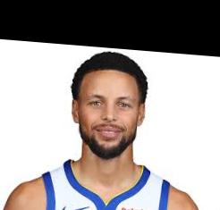

LeBron James
Steph Curry

Aligned LeBron James
Aligned Steph Curry

Blended Image of Steph Curry's face onto LeBron James

This project aims to TODOTODOTODOTODOTODOTODOTODOTODO programatically apply image processing techniques on photos from the Prokudin-Gorskii collection, primarily with a naive approach then a pyramid approach, to produce an image with color.
Explain gradient and binarizing The partial derivativese in x and in y show the intensity
change in the horizontal and vertical directions, respectively.
How I chose threshold
Explain strategy
How I chose kernel size and sigma (what's sigma used for), using 6 is rule of thumb
First, with the original image, we blur it (low-pass) with a Gaussian filter individually to each RGB channel, effectively removing high-frequency details like fine edges and textures. Then, we sharpen the image through unsharp masking by multiplying the high-frequency parts with a $\alpha$.
Look into https://scikit-image.org/docs/stable/auto_examples/filters/plot_unsharp_mask.html for more info.
Gaussian stack Laplacian stack Normalize Both can clip even though the code to display images automatically clips for us.
We export the mask image from Adobe Photoshop as JPG so our image has 3 channels. Exporting as
PNG will give 4 channels.
We blend Curry's face onto LeBron's since the Curry's face is larger than LeBron's in the
aligned images. The quality of all 5 images below is not high. We will use higher quality
examples below to better illustrate the results.


The blended image above has rather abrupt changes from bright buildings to ones in the night time. Also, the dark patches in some of Barcelona's city view are awkward.